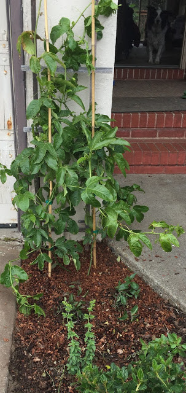

signals of happiness
July 06, 2016
Digging in the dirt, pulling weeds, planting flowers… these things make me feel at peace. There are some activities in my life that I have discovered are symptoms of happiness. My garden blooms, I write, I do the dishes in the morning, and I take longer walks with my dog.
{kind=link}
I don’t know that they actually make me happy. I don’t particularly like to write, it’s a way of thinking through things and connecting with other people in quiet, unexpected ways. Writing makes me just a little uncomfortable, but it helps somehow to send these thoughts outside of my head.
I can’t say I always love gardening. It’s kind of boring, but more interesting than meditation and with some similar positive effects. I like how I feel afterwards, and it makes me happy every time I walk by and see colorful splashes of color and so many shades of green.
These small acts of taking care of myself and being present in my surroundings are indicators. I try to notice when they stop, when the weeds grow wild, when I don’t take time to write and the coffee cups pile up in the sink. Today I noticed that I was gardening and it wasn’t even necessary, and I’ve been taking longer walks in the morning. I still struggle and have doubts and there’s all sorts of awful in the world, but when we go out there to face the world, I think we all need a couple of leading indicators of happiness.